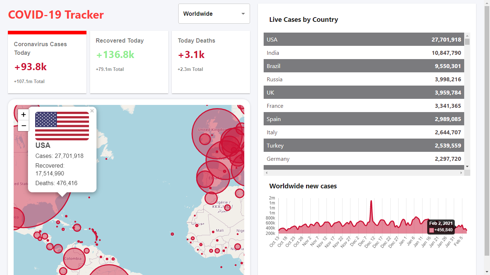

Hey Everyone! Thanks for visiting, Are you interested in creating an application or a AI Automation
Don't hesitate! Let's get started with a simple conversation to explore your idea or vision....
Global Covid-Tracker

ReactJS - Hooks || Firebase Hosting || ChartJS || disease.sh API